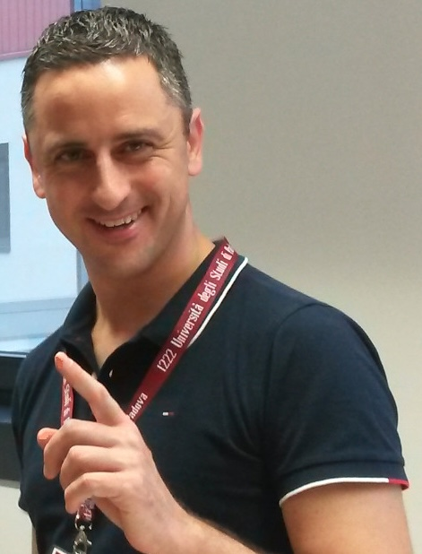
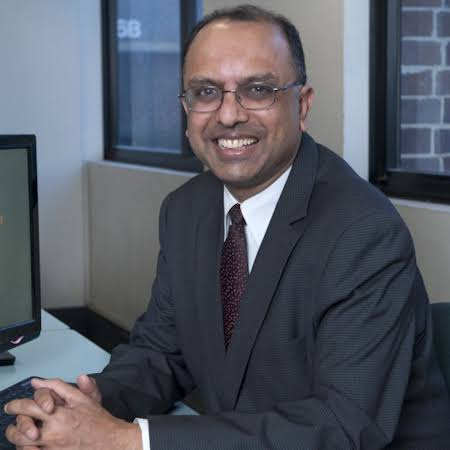
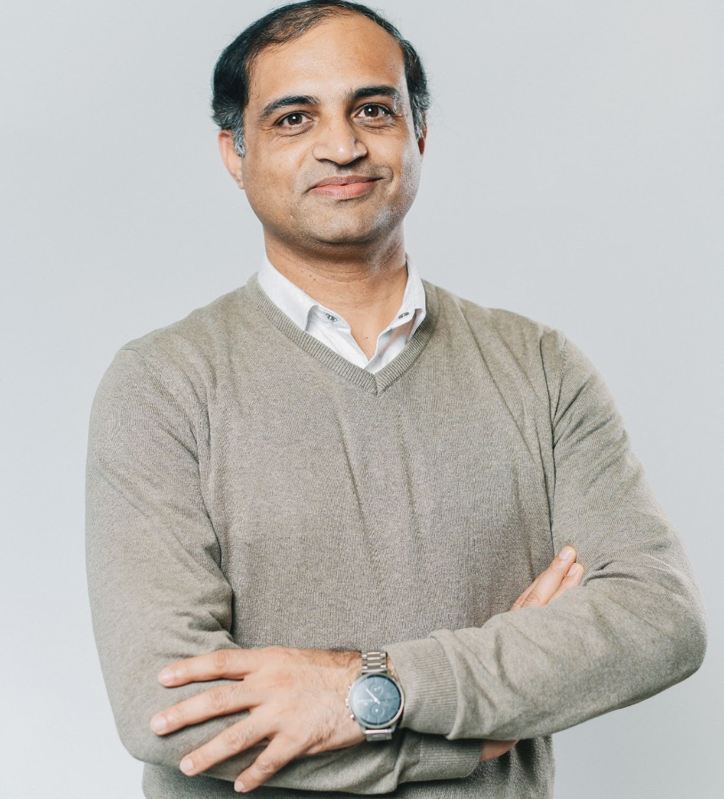
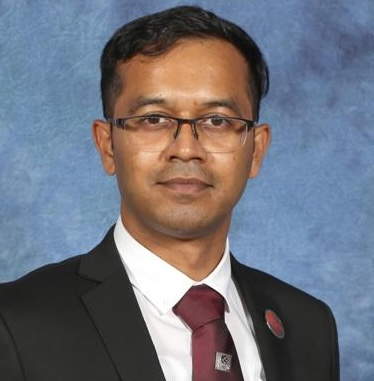

University of Padua, Italy
Professor Mauro Conti, Head of studies in master degree in Cybersecurity
Prof. Mauro Conti is a full time professor in University of Padua,
Italy. He is member of the Blockchain Expert Panel of the Italian
Government. In 2021 he was nominated Fellow of the Young Academy of
Europe (YAE).

University of Newcastle, Australia
Professor Vijay Varadharajan, Global Innovation Chair professor in Cybersecurity
Vijay has published more than 500 papers in International Journals
and Conferences, has co-authored and edited 10 books on Information
Technology, Security, Networks and Distributed Systems and have held
3 patents.
Asia University, Taiwan
Professor Brig B. Gupta, Director of International Center of AI and Cyber Security Research
In more than 17 years of his professional experience, he published
over 500 papers in journals/conferences including 30 books and 10
Patents with over 20,000 citations. He is also selected in the 2021
and 2020 Stanford University’s ranking of the world’s top 2%
scientists.

Cochin University of Science and Technology, India
Professor Vinod P., Professor at Department of Computer Applications
Currently, He is a MSCS Post Doctoral fellow working at a project
titled OPTIMA (Organization sPecific Threat Intelligence Mining and
sharing) at University of Padua, Italy

University of Newcastle, Australia
Dr. Uday Tupakula, Deputy Director for the Advanced Cyber Security Engineering Centre
Uday made significant contributions to cybersecurity research as a
Co-CI in several cybersecurity projects in the areas of
Virtualisation Security, Cloud Security, Trusted Computing, Malware
Analysis, MANET, B3G/5G Security, Software Defined Networking, and
Network Function Virtualisation Securit

Deakin University, Australia
Dr. Kallol Krishna Karmakar, Lecturer at the School of Information Technology
His PhD research focussed on developing security services for
Software Defined Network (SDN).